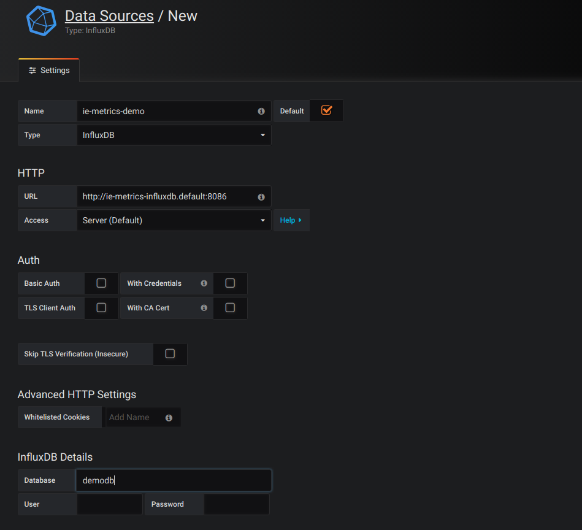
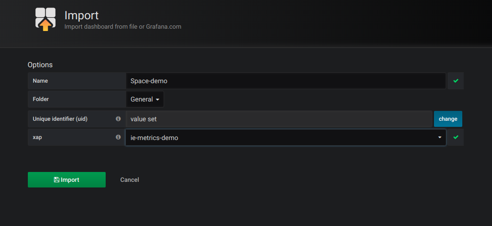
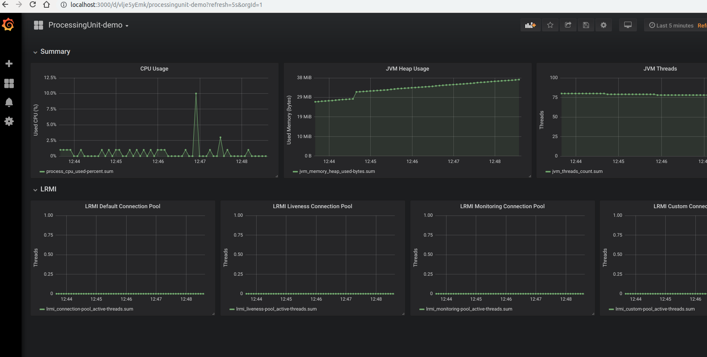

| Author | Product Version | Last Updated | Reference | Download |
|---|---|---|---|---|
| Dharma Prakash and Dixson Huie | 14.0 | January 2019 | InsightEdge-Kubernetes metrics demo |
Monitoring a production environment of any system requires inspecting many statistics; InsightEdge is no different. The Web Management Console collects and displays various data grid metrics by polling the system's components, but these statistics have some limitations:
To overcome these limitations, GigaSpaces products include a powerful and versatile framework for reporting metrics - each component can report its own metrics (or even user-defined metrics) to any database or tool the user favours by implementing a metrics reporter. In addition, GigaSpaces provides a built-in reporter for InfluxDB and integration with Grafana to provide metrics storage and visualization:
These third-party applications can be installed in Kubernetes to enable monitoring, analytics and data visualization for InsightEdge installed with KubeGrid. This topic describes a sample configuration of InfluxDB and Grafana in Kubernetes, using sample dashboards to display data from the data grid.
The data in the InfluxDB database is lost if the application is undeployed from your system.
Before running this demo, create an account and a repository on Docker Hub if you don't already have them. You will also need the following applications installed locally:
This demo was set up using the following configuration:
Integrating InfluxDB and Grafana for monitoring GigaSpaces products in Kubernetes requires the following steps:
InfluxDB needs to be installed in two places:
After installing InfluxDB in Kubernetes, you need to apply port forwarding so that InfluxDB can communicate with Grafana, and set up the InfluxDB demo database so it can hold the metrics data.
To install InfluxDB on your local machine:
To install and configure InfluxDB in Kubernetes:
In the command window, type the following:
helm install ie-metrics stable/influxdb
helm install --name ie-metrics stable/influxdb
helm install --name ie-metrics stable/influxdb
This installation is only for the purposes of running the demo, so the credentials aren't set.
Set port forwarding by typing the the following command:
kubectl port-forward --namespace default $(kubectl get pods --namespace default -l app=ie-metrics-influxdb -o jsonpath='{ .items[0].metadata.name }') 8086:8086Run the InfluxDB CLI and do the following to create an InfluxDB database for the demo:
influx.create database demodb.show databases.
The next step in the integration is setting up Grafana. This includes installing Grafana in Kubernetes, setting port forwarding and configuring the Grafana client to use InfluxDB and the sample dashboards in the demo.
Make sure you have already cloned the InsightEdge metrics demo software from Github; you will need the files when you configure the Grafana client.
To install Grafana in Kubernetes:
In the command window, type the following:
helm install ie-grafana stable/grafana
helm install --name ie-grafana stable/grafana
helm install --name ie-grafana stable/grafana
Set the port forwarding for Grafana in one of the following ways:
kubectl port-forward --namespace default $(kubectl get pods --namespace default -l "app=grafana,release=ie-grafana" -o jsonpath='{ .items[0].metadata.name }') 3000
export POD_NAME=$(kubectl get pods --namespace default --selector "app=grafana,release=ie-grafana" --output="jsonpath='{ .items[0].metadata.name }')"
kubectl port-forward --namespace default $POD_NAME 3000
The native GigaSpaces InfluxDB metrics reporter is disabled by default in the InsightEdge software package. Therefore, you need to prepare a custom Docker image that will use the modified (enabled) metrics.xml file in the InsightEdge metrics demo. This custom Docker image should then be uploaded to the Docker Hub account that you created, so it can be accessed by the InsightEdge Helm chart.
To prepare the custom Docker image:
Log in to your Docker Hub repository:
sudo docker login --username=<your username>
Build the custom Docker image that will include the modified metrics file:
sudo docker build -t <username>/ie-metrics-demo:14.0.1
sudo docker image ls
Push the Docker image to your Docker Hub account:
sudo docker push <username>/ie-metrics-demo:14.0.1
At this point, you are finally ready to install InsightEdge in Kubernetes. You have both of the third-party applications with their connection information up and running in Kubernetes, and you have the custom Docker image that supports the metrics configuratgion file with the InfluxDB reporter enabled.
To install InsightEdge in Kubernetes:
Download the InsightEdge Helm charts as follows:
helm repo add gigaspaces https://resources.gigaspaces.com/helm-charts
helm fetch gigaspaces/insightedge --version=14.0.1 --untar
helm pull gigaspaces/insightedge --version=14.0.1 --untar helm fetch gigaspaces/insightedge --version=14.0.1 --untarTo instruct Helm to install InsightEdge using the custom Docker image, modify the following property in the insightedge/charts/insightedge-pu/values.yaml file, where <username> is your Docker Hub account:
repository:
<username>/ie-metrics-demo
Deploy InsightEdge in Kubernetes:
helm install demo insightedge
helm install insightedge --name demo
helm install insightedge --name demo
For more information about the GigaSpaces Helm charts and how to install and configure InsightEdge in Kubernetes, see the KubeGrid section of the product documentation.
You need to do the following in the Grafana client so that it will work with the GigaSpaces metrics reporter and the sample dashboards from the InsightEdge metrics demo:
To configure the data source:
Open a browser to localhost:3000 and provide the username and password.
The username is admin. To get the password, type the following command in the command window:
```
kubectl get secret --namespace default ie-grafana -o jsonpath="{.data.admin-password}" | base64 --decode ; echo
```
Click the Settings icon, then select Data Sources.
Click Add Data Source. In the Settings tab of the Data Sources/New screen, do the following:
ie-metrics-demoInfluxDB.http://ie-metrics-influxdb.default:8086demodb
To import the the sample dashboards:

After you finish configuring the Grafana client, you can open the dashboards and view the metrics.
